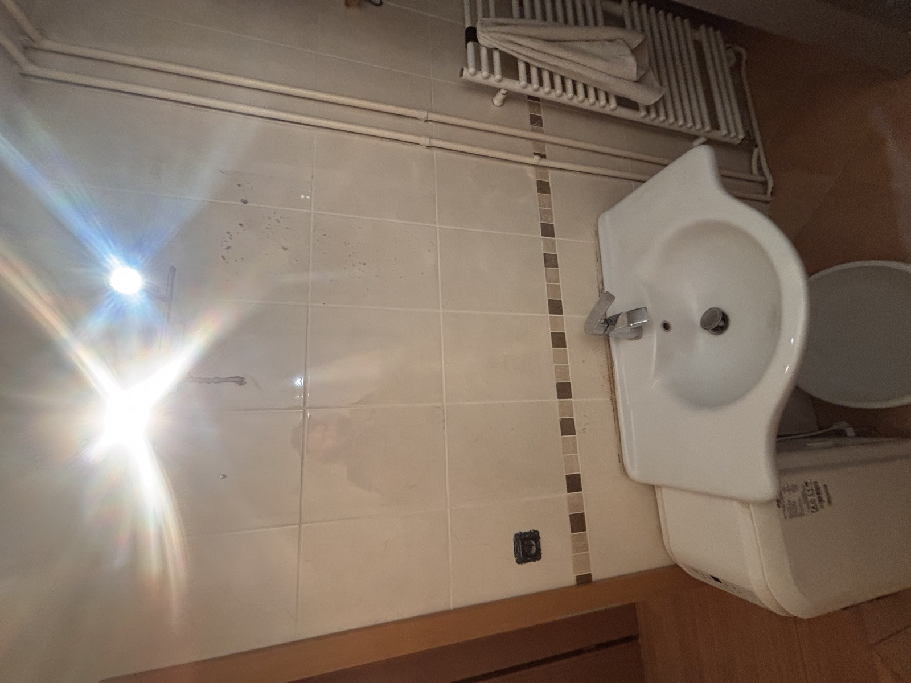

_Reference_Kopalnice in inštalacije_Še več ob ogledu
Reference
Delo, ki se vidi.
Izbor kopalnic in inštalacij. Še več fotografij vam z veseljem pokažem ob ogledu.
Pošlji fotografijo za oceno_Izbrana dela_Kaj sem naredil
_O delu
Adaptacija kopalnice
Mansardna kopalnica z velikimi sivimi ploščicami, visečim umivalniškim elementom, visoko omarico in okroglim ogledalom.

1 / 12
_Pred in po_Isti kotiček kopalnice_Povlecite

 Pred
Po
Pred
Po
Povlecite drsnik levo in desno
_Pokličite
Začniva z ogledom.
040 720 568Če sem na delu in ne dvignem, mi pustite SMS. Oglasil se bom.
Ali pošljite fotografijo za oceno